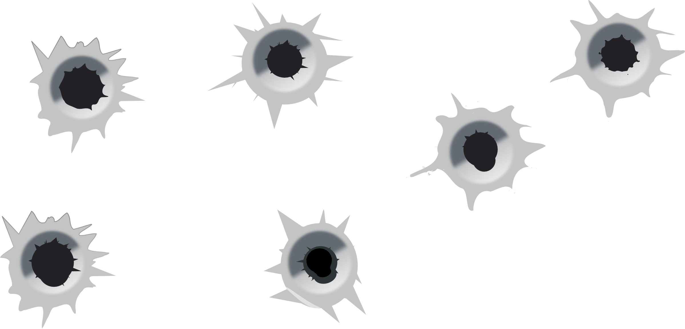

Bullet-proof Front Architecture
Guichet done right
En début de projet...
Tout est possible, tout est ré-utilisable, tout est beau...
Mais un peu plus tard...
ouch.
Le CSS est souvent le premier indicateur de
code smell
#standfirst,.list-heading { font-family: Arial, Helvetica, sans-serif; font-weight: 400; } code,pre { font-family: "Courier New", Courier, monospace; } code { font-weight: 700; } html,body { font-size: 100%; } h1 { font-size: 240%; text-transform: uppercase; margin: 0 0 30px; } h2 { font-size: 110%; } .extras h2 { border-bottom: 1px solid #3d3a37; font-size: 180%; } h4 { font-size: 100%; font-weight: 400; margin-bottom: 5px; } p,ul { font-size: 80%; line-height: 1.4em; } footer a,#wiley-logo,.tool .chapter-ref,.newsletter,pre,.extra-content td { font-size: 75%; } footer { border-top: 1px solid #999; clear: both; text-transform: uppercase; width: 940px; margin: 0 auto; } #welcome-text { color: #000; line-height: 1.3em; margin-bottom: 10px; } #standfirst { line-height: 1.5em; margin-top: 10px; } .list-description { line-height: 1.8em; margin: 10px 0 10px 20px; } nav { float: right; font-size: 75%; text-align: right; text-transform: uppercase; width: 380px; z-index: 70; margin: 24px 0 19px; } nav a { color: #fff; line-height: 15px; margin-left: 10px; padding-bottom: 4px; } dfn { font-style: italic; } header { -moz-box-shadow: 0 0 12px -2px #000; -webkit-box-shadow: 0 0 12px -2px #000; background-color: #3d3a37; box-shadow: 0 0 12px -2px #000; height: 60px; left: 0; position: fixed; top: 0; width: 100%; z-index: 50; } #content { background-color: #eeeceb; } nav a:hover { border-bottom: 1px solid #fff; color: #fff; } nav a.current:hover { border-bottom: 1px solid #fff; color: #e2764a; } a:hover { color: #ab5a3b; } a .chapter-ref { color: #999; } .byline { color: #666; } section,header,footer,aside { display: block; } #attractor { clear: both; height: 400px; left: 0; margin-top: 60px; position: relative; text-align: center; top: 0; width: 100%; z-index: 5; } #slideshow { height: 400px; left: 0; overflow: hidden; position: relative; top: 0; width: 1000px; margin: 0 auto; } #logo { margin: 19px 0; } .page,.page-internal { width: 960px; margin: 0 auto; } .page-internal { clear: both; margin-top: 140px; } .push1 { margin-left: 320px; } .push2 { margin-left: 640px; } .columns1,.columns2,.columns3,.header1,.header2,.header3 { float: left; margin: 0 10px; } .columns1 { width: 300px; } .columns2 { width: 620px; } .columns3 { width: 960px; } .header2 { width: 140px; } .column3right { float: right; width: 300px; margin: 0 10px 30px; } .chapter,.tool { background-image: url(../images/chapter-frame.gif); height: 200px; margin-bottom: 20px; } .tool { float: left; height: 170px; width: 270px; margin: 0 10px 20px; padding: 15px; } header .center { padding-top: 8px; } #overview { position: relative; top: -50px; } .chapter h1 { margin: 70px 0 0; } li { margin-bottom: 1em; } footer
Votre CSS va mal
- Le code est en vrac dans 1 ou plusieurs fichiers
- Beaucoup de code est dupliqué
- Des sélecteurs trop spécifiques sont utilisés pour compenser
- Les fichiers CSS sont lourds et difficilement maintenables
- Les performances sont impactées, notamment sur mobile
- Vous n'avez pas le temps et l'énergie de tout refondre
Priez pour votre salut, pauvres fous
Step 1 : OoCSS

Step 1 : OoCSS
“Le principe du CSS Orienté Objet est de séparer le contenu des contenants et de considérer les blocs de contenus comme des objets réutilisables auxquels nous appliquons un habillage graphique.” Nicole Sullivan https://github.com/stubbornella/oocss/wiki
Step 1 : OoCSS
Dans la pratique, on distingue quelques règles simples :
- Réfléchir en termes d’éléments réutilisables
=> classes et non Ids - Cibler un élément plutôt qu’un contexte
- Définir un fichier par élément
Meet the smelly code
nav {
background-color: lightgrey;
font-size: 1.2em;
}
nav #search form {
float: right;
}
nav #search form input {
color: white;
}
nav p a {
font-style: underline;
}
nav p a:hover {
color: black;
}
#sidemenu {
background-color: none;
}
#sidemenu a {
color: cyan;
}
#sidemenu p + p {
margin-top: 2em;
}
Après OoCSS
/* navbar.css */
.navbar {
background-color: lightgrey;
font-size: 1.2em;
}
.nav-search {
float: right;
}
.nav-search input {
color: white;
}
.navbar p a {
font-style: underline;
}
.navbar p a:hover {
color: black;
}
/* sidemenu.css */
.sidemenu {
background-color: none;
}
.sidemenu a {
color: cyan;
}
.sidemenu p + p {
margin-top: 2em;
}
/* main.css */
…
@import url(‘navbar.css’);
@import url(‘sidemenu.css’);
…
Après OoCSS
/* navbar.css */
.navbar {
background-color: lightgrey;
font-size: 1.2em;
}
.nav-search {
float: right;
}
.nav-search input {
color: white;
}
.navbar p a {
font-style: underline;
}
.navbar p a:hover {
color: black;
}
/* sidemenu.css */
.sidemenu {
background-color: none;
}
.sidemenu a {
color: cyan;
}
.sidemenu p + p {
margin-top: 2em;
}
/* main.css */
…
@import url(‘navbar.css’);
@import url(‘sidemenu.css’);
…
Step 2 : Pré-processeurs

Step 2 : Pré-processeurs
“Les pré-processeurs sont des outils de développement permettant d'écrire du style dans langage riche en fonctionnalités, et compilant en CSS.” Laurent Wiesel http://bit.ly/1B5bqGQ
Step 2 : Pré-processeurs
Les préprocesseurs CSS permettent de coder du CSS.
Certains préprocesseurs comme LESS SASS ou Stylus ont des fontionnalités très riches !
Step 2 : Pré-processeurs
Ici, seules les fonctionnalités les plus basiques nous intéressent :
- Les variables
- L'import nesté de fichiers de style
Step 2 : Pré-processeurs
/* _settings.scss */
$theme-color-1: lightgray;
$theme-color-2: cyan;
$font-base-color: black;
/* _navbar.scss */
$navbar-bg-color: $theme-color-1;
$navbar-font-size: 1.2em;
$navbar-search-bg-color: invert($font-base-color)
$navbar-link-color-hover: black;
.navbar {
background-color: $navbar-bg-color;
font-size: $navbar-font-size;
}
.nav-search {
float: right;
}
.nav-search input {
color: $navbar-search-bg-color;
}
.navbar p a {
font-style: underline;
}
.navbar p a:hover {
color: $navbar-link-color-hover;
}
/* main.scss */
…
@import settings;
@import navbar;
@import sidemenu;
…
/* _sidemenu.scss */
$sidemenu-bg-color: none;
$sidemenu-link-color: $theme-color-2;
.sidemenu {
background-color: $sidemenu-bg-color;
}
.sidemenu a {
color: $sidemenu-link-color;
}
.sidemenu p + p {
margin-top: 2em;
Step 3 : Nomenclature de classes

Step 3 : Nomenclature de classes
“There are only two hard things in Computer Science: cache invalidation and naming things.” Martin Fowler
Step 3 : Nomenclature de classes
Non au nommage sémantique : semantical naming
Oui au nommage raisonné : sensible naming
La sémantique c'est pour les machines.
Une balise html est interprétée. C'est une notation sémantique.
Un nom de classe n'est jamais interprété par une machine. C'est une notation raisonnée.
Step 3 : Nomenclature de classes
On adopte par exemple la notation BEM :
Block - Element - Modifier
.navbar {…}
.navbar__search {…}
.navbar__search--hover {…}
Step 3 : Nomenclature de classes
/* _navbar.scss */
$navbar-bg-color: $theme-color-1;
$navbar-font-size: 1.2em;
$navbar-search-bg-color: invert($font-base-color)
$navbar-search-bg-active-color: lighten(invert($font-base-color), 10%);
$navbar-link-color-hover: black;
.navbar {
background-color: $navbar-bg-color;
font-size: $navbar-font-size;
}
.navbar__search {
float: right;
}
.navbar__searchInput {
color: $navbar-search-bg-color;
}
.navbar__searchInput--active {
color: $navbar-search-bg-active-color;
}
.navbar__link {
font-style: underline;
}
.navbar__link:hover,
.navbar__link--hover {
color: $navbar-link-color-hover;
}
Step 4 : Atomic Design
#boum

Step 4 : Atomic Design
“We’re not designing pages,
we’re designing systems of components.” Stephen Hay on Brad Frost website
Step 4 : Atomic Design
En bref, l'Atomic Design, c'est :
- une approche modulaire du design
- une organisation tout-composants
- une méthodologie pour structurer son front
Ce n'est pas :
- uniquement pour le CSS
- une librairie
- un framework
- un lolcat
- dangereux
Step 4 : Atomic Design
Nous allons séparer le code en 3 niveaux structurels :
Quarks
Elements HTML pursAtomes
Composants stand-aloneMolécules
Composants utilisants d'autres composants
Step 4 : Atomic Design
Nous allons séparer le code en 3 niveaux structurels :
Quarks Pas de dépendences
Elements HTML pursAtomes Pas de dépendences
Composants stand-aloneMolécules Dépendences sur les Atomes
Composants utilisants d'autres composants
The End
Des questions ?
Vertical Slides
Slides can be nested inside of other slides, try pressing down.
Basement Level 1
Press down or up to navigate.
Basement Level 2
Cornify

Basement Level 3
That's it, time to go back up.
Slides
Not a coder? No problem. There's a fully-featured visual editor for authoring these, try it out at http://slid.es.
Point of View
Press ESC to enter the slide overview.
Hold down alt and click on any element to zoom in on it using zoom.js. Alt + click anywhere to zoom back out.
Works in Mobile Safari
Try it out! You can swipe through the slides and pinch your way to the overview.
Marvelous Unordered List
- No order here
- Or here
- Or here
- Or here
Fantastic Ordered List
- One is smaller than...
- Two is smaller than...
- Three!
Transition Styles
You can select from different transitions, like:
Cube -
Page -
Concave -
Zoom -
Linear -
Fade -
None -
Default
Themes
Reveal.js comes with a few themes built in:
Default -
Sky -
Beige -
Simple -
Serif -
Night
Moon -
Solarized
* Theme demos are loaded after the presentation which leads to flicker. In production you should load your theme in the <head> using a <link>.
Global State
Set data-state="something" on a slide and "something"
will be added as a class to the document element when the slide is open. This lets you
apply broader style changes, like switching the background.
Custom Events
Additionally custom events can be triggered on a per slide basis by binding to the data-state name.
Reveal.addEventListener( 'customevent', function() {
console.log( '"customevent" has fired' );
} );
Slide Backgrounds
Set data-background="#007777" on a slide to change the full page background to the given color. All CSS color formats are supported.
Image Backgrounds
<section data-background="image.png">Repeated Image Backgrounds
<section data-background="image.png" data-background-repeat="repeat" data-background-size="100px">Background Transitions
Pass reveal.js the backgroundTransition: 'slide' config argument to make backgrounds slide rather than fade.
Background Transition Override
You can override background transitions per slide by using data-background-transition="slide".
Clever Quotes
These guys come in two forms, inline:
“The nice thing about standards is that there are so many to choose from”
and block:
“For years there has been a theory that millions of monkeys typing at random on millions of typewriters would reproduce the entire works of Shakespeare. The Internet has proven this theory to be untrue.”
Pretty Code
function linkify( selector ) {
if( supports3DTransforms ) {
var nodes = document.querySelectorAll( selector );
for( var i = 0, len = nodes.length; i < len; i++ ) {
var node = nodes[i];
if( !node.className ) {
node.className += ' roll';
}
}
}
}
Courtesy of highlight.js.
Intergalactic Interconnections
You can link between slides internally, like this.
Fragmented Views
Hit the next arrow...
... to step through ...
any type- of view
- fragments
Fragment Styles
There's a few styles of fragments, like:
grow
shrink
roll-in
fade-out
highlight-red
highlight-green
highlight-blue
current-visible
highlight-current-blue
Spectacular image!

Export to PDF
Presentations can be exported to PDF, below is an example that's been uploaded to SlideShare.
Take a Moment
Press b or period on your keyboard to enter the 'paused' mode. This mode is helpful when you want to take distracting slides off the screen during a presentation.